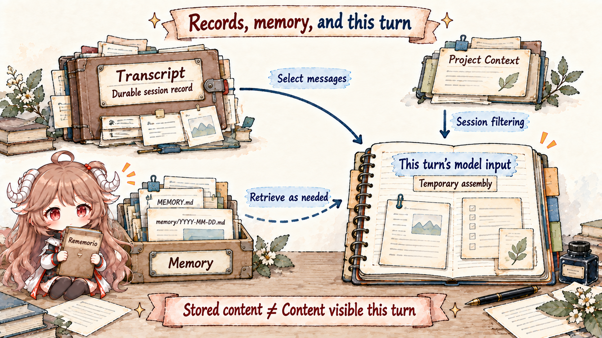
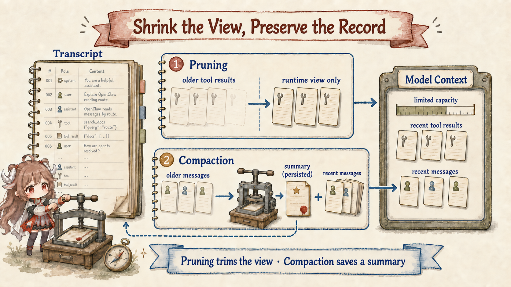

Return to Alice from the previous chapter. She has talked with the agent for two weeks and the transcript still exists. Today she says, “Continue with last week's decision,” but the answer sounds as if the agent has never heard of it. The obvious diagnosis is lost history. Yet the history may still be durable and simply absent from the current model window. The decision may live only in a long transcript rather than long-term memory. Or compaction may have summarized the older exchange without preserving that detail.
All three failures look like forgetting, but they require different repairs. A larger window cannot fix the wrong session route. Telling the model to “remember” does not create durable state. Sending the entire transcript on every run quickly collides with cost and hard capacity. Diagnosis starts by separating record, memory, and runtime view into different owners.
Reading contract.By the end, you should be able to name the workspace files injected into Project Context by default; explain why the system prompt is rebuilt on every run; account for the two token costs of tools; place ContextEngine's ingest, assemble, compact, and afterTurn phases; tell which of pruning and compaction rewrites the transcript; and explain why MEMORY.md is not another name for the context window.
Evidence boundary.This chapter is pinned to e6b4264, following its workspace/bootstrap, ContextEngine, built-in runtime, and SQLite session implementation. Client-side summaries, provider checkpoints, and custom engines have separate behavior; the discussion does not treat one compaction path as the contract of every runtime.
1. What enters one model request
1.1 Context includes every input in the request
In OpenClaw, context is not merely the last few chat messages. It is everything actually sent for one model request: the system prompt, conversation messages, tool calls and results, attachments, and tool definitions. All of them compete for the same context window. There is no permanently reserved space that only conversation history may consume.
This explains a familiar surprise: no extra conversation was added, but installing several verbose tools reduced the history that fit. The visible chat length is not the only input. Images, structured tool results, JSON schemas, and dynamic prompt additions all consume capacity.
model context = system prompt
+ assembled conversation history
+ tool schemas
+ tool results and attachments
memory != model context
transcript != model contextThe two inequalities matter more than the formula. A transcript is the durable record of a session. Memory is a set of selected facts intended to survive longer and often cross session boundaries. Model context is the temporary view assembled for one run. The first two can supply the third, but neither automatically or completely becomes it.
1.2 Workspace provides a directory; sandbox provides isolation
Each agent has a workspace, which becomes the default root for relative tool paths and bootstrap files. workspace.ts creates the directory and starter files; the runtime later reads selected files into the system prompt as Project Context.
“Working directory” must not be read as “filesystem boundary.” Without a sandbox policy, a tool can still access absolute paths outside it. Real filesystem, network, and process isolation belong to sandbox and tool policy, the subject of Part VI. A workspace establishes default ownership and collaboration material, not security by itself.
It is also distinct from OpenClaw's runtime state directory. The workspace contains agent-editable instructions, skills, and memory files. Runtime state contains configuration, credentials, and session storage. Mixing the session database into the workspace—or putting the user project into runtime state—makes permissions, backups, and migration unnecessarily ambiguous.
1.3 Project Context loads only the defined bootstrap files
The canonical bootstrap set has explicit names: AGENTS.md describes working conventions, SOUL.md carries persona and principles, IDENTITY.md identifies the agent, USER.md holds the user profile, and BOOTSTRAP.md participates during initial setup. Root MEMORY.md enters Project Context only when it already exists and the current session is not a privacy-restricted shared group or channel. The runtime does not recursively read the workspace or inject a file merely because its name looks important.
| File | Default role | Easy mistake |
|---|---|---|
AGENTS.md | Repository, workflow, and behavioral conventions. | It does not bypass higher-level policy. |
SOUL.md | Persona, voice, and principles. | Persona text is not access control. |
IDENTITY.md | Agent self-description. | It is separate from provider and model identity. |
USER.md | Stable user background and preferences. | It has its own cap so a profile cannot consume the window. |
BOOTSTRAP.md | First-run setup guidance. | It should not become permanent prompt growth after setup. |
MEMORY.md | Long-term facts and decisions when the file exists. | Shared sessions drop root memory; it is not an unconditional global prompt. |
Per-file and total bootstrap limits truncate oversized input with a visible marker. Missing ordinary files remain observable, but absent USER.md and MEMORY.md are skipped. Session filteringalso limits subagents to AGENTS.md, and cron to AGENTS.md, SOUL.md, IDENTITY.md, and USER.md; neither receives root memory. These differences must not all be diagnosed as truncation.
TOOLS.md, BOOT.md, and HEARTBEAT.md have useful roles elsewhere, but their names do not put them into the default Project Context list. Source reading should follow the actual bootstrap resolver rather than infer injection semantics from filenames.
1.4 The system prompt combines stable rules and current state
buildAgentSystemPrompt does not emit one installation-time template. Every run combines the current tools, skill metadata, workspace, runtime and time information, channel capabilities, sandbox state, and bootstrap content. The bootstrap snapshot rereads files every turn and reuses its array only when content is unchanged. Edits that survive session filtering and size limits therefore enter the next construction without rewriting old transcript entries.
This also demands a stable/dynamic split. Persona and durable conventions belong in workspace files. Current time, available tools, and sandbox state must be generated at runtime. Persisting every dynamic detail into the transcript creates stale facts; rebuilding all stable rules independently in each channel creates inconsistent ingress.
Slash directives are a preprocessing concern. Controls such as /think, /model, and /queue update runtime or session settings and are removed from the user text sent to the model. The model receives the processed request, not the entire Gateway control protocol embedded in it.
1.5 Skills expand on demand; tool schemas travel with the request
To control prompt size, the system prompt normally lists only each available skill's name, summary, and location. When the model determines that a capability applies, it reads the full SKILL.md on demand. Injecting every installed skill in full would make adding capabilities reduce the space available for the task and history.
Tool cost is less visible. The system prompt includes a human-readable name and description, while the provider request also includes the JSON schema that constrains callable parameters. The schema may not appear as ordinary chat text, but still consumes context. Tight descriptions and schemas without redundant nesting can save more than removing a few user sentences.
A useful distinction:a skill says when to load which operating manual; a tool schema says which structured call the model can make now. The former should expand on demand. The latter must be fully precise whenever the tool is callable. Hiding the parameter contract to save tokens is unsafe, while preloading every manual is wasteful.
2. How ContextEngine selects model input and maintains history
2.1 ContextEngine assembles input without replacing the session store
The default legacy context engine preserves established behavior: ingest and afterTurn add little, assemble lets the existing sanitize/validate/limit pipeline shape messages, and compact delegates to built-in summarization. A plugin can occupy the single plugins.slots.contextEngine slot, but that gives it the context lifecycle—not automatic ownership of the canonical transcript database.
The core lifecycle in ContextEngine reads naturally in time:
- ingest:observe, store, or index a message as it enters the session.
- assemble:before each model request, return ordered messages within the token budget and optionally a
systemPromptAddition. - compact:reduce older context near the window limit or when the user invokes
/compact. - afterTurn:update indexes or durable state and schedule maintenance after a successful run.
- maintain (optional):perform controlled transcript rewrites through the runtime API, optionally in the background.
assemble returns this run’s message sequence and may add a system-prompt fragment. Its actual callreceives messages, a budget, the current user prompt, and available tool names; it does not rebuild the complete system prompt and tool JSON schemas. The runtime assembles those separately for the provider request. Selecting messages also grants no arbitrary authority over durable history: transcript rewrites still use the safe runtime interface.
2.2 The turn fence prevents duplicate writes during retries
A custom engine may mirror transcripts into a vector database and assemble a relevance-ranked view. Retry semantics are more dangerous than retrieval quality: if the first provider request fails and the same logical user turn retries, the engine must not commit it twice or alternately include and exclude it during assembly.
To durably own admitted turns, an engine declares current-turn-fence and atomic-idempotent-advancement semantics, then implements atomic commitTurn keyed by advancementKey. A repeated key must return duplicate instead of appending again. Without the complete declaration, the host conservatively falls back to the legacy path for that logical turn rather than invite double-written history.
This contract transfers to any “external memory plus agent” architecture. Relevance is only the read path. Idempotent commit, repeatable assembly, and a precise visibility boundary for the current turn determine whether the state can be trusted.
2.3 Transcript, memory, and model input store different information

The transcript records the messages, tool calls, and results that actually occurred under one sessionId. It is the causal ledger. Memory holds selected facts and decisions meant for longer reuse. Runtime View is the temporary message sequence produced by assembly for one run; the view itself does not need to become a new source of truth after the request.
MEMORY.md contains curated long-term memory, while memory/YYYY-MM-DD.md contains daily notes. A private main session can use long-term memory as trusted context or a retrieval source. Group and other sessions must not receive the same private profile unconditionally. Retrieval is a selective bridge with an authorization boundary, not “concatenate all memory files into the prompt.”
Cross-session recall follows the same rule. It may retrieve fragments from other authorized transcripts, but it does not merge session keys or change the owner of either transcript. Otherwise “remember a relevant fact” would silently become “inherit another session's entire authority.”
3. How model input shrinks as history grows
3.1 Pruning shrinks one request; compaction persists a summary

Both mechanisms reduce model input, but their durability semantics are different. Pruning omits bulky old tool results during assembly, affecting only the in-memory prompt. The full result remains in the durable transcript for audit or future assembly under another policy. It fits reproducible tool output whose immediate value has decayed.
Default client-side compaction summarizes older conversation and appends a compaction recordwhose firstKeptEntryId identifies the retained tail. When rebuilding the next context, the runtime selects the latest summary plus retained recent messages. The original history remains on disk. The summary is a lossy model view; compaction does not erase the old records. Persisting the summary and cut point makes that view affect subsequent requests.
| Mechanism | Model context | Durable transcript | Best for |
|---|---|---|---|
| Pruning | Omits older tool results. | Unchanged. | Large tool output that must remain auditable. |
| Compaction | Summary plus recent messages. | Appends a summary and retained-tail marker; original history remains. | A conversation that must grow beyond one context window. |
“The model did not see it” does not imply deletion. Assembly may not select it, pruning may trim only this request’s result, or a compaction summary may omit its detail. This simplified state shape omits ids, parents, and timestamps: the important operation is appending a checkpoint rather than overwriting Alice’s original decision.
Stored history: older messages … + recent messages …
Append: { type: "compaction", summary: "Agreed approach …",
firstKeptEntryId: "recent-user-entry", tokensBefore: 42000 }
Next input: summary + retained messages from recent-user-entry
Original history: still readable from session storage3.2 When memory flush and optional maintenance run
Memory flush is a silent housekeeping turn that asks the agent to append durable facts to memory files. A summary continues this session; memory supports longer-lived retrieval. Neither replaces the other. But “flush before compaction” does not mean every user message must synchronously wait for another memory-organizing turn.
The built-in runtime separates required pre-inference maintenancefrom optional post-reply work. When history must shrink before inference, the foreground still performs required compaction and may try a flush first. A persistent Gateway schedules additional flush/compaction only after reply delivery settles and the foreground writer closes, with independent session-write admission and the turn’s remaining time. A one-shot openclaw agent --local command starts no optional work after returning.
If Alice sends another message immediately after receiving the reply, the foreground coordinatorcancels preemptible maintenance and waits for its actual completion before reading the session. An abort signal is not proof that writes have stopped, and cancellation does not undo an already committed summary. Optional maintenance failure is logged without replacing the completed reply with an error.
| When | Who runs it | Guarantee and limit |
|---|---|---|
| Before inference, history must shrink. | Foreground run. | Required compaction precedes inference; failure retains the session and is reported. |
| Delivery and foreground writing have settled. | Independent maintenance run. | Flush and compact conditionally; there may be no work or remaining time. |
| The next message arrives. | Foreground coordinator. | Cancel and await maintenance so two writers cannot change history concurrently. |
A flush model override remains exact and does not inherit the session fallback chain. Its tools are reduced to reads and append-only writes to the designated memory file, then still pass normal tool policy. If that removes the writer, the runtime warns that memory cannot be saved. Recording decisions promptly is safer than relying on one rescue at the window limit.
3.3 Overflow still preserves tool-call and result pairs
Before a run, OpenClaw estimates proximity to the provider's context limit; during the run, the provider may still report overflow. The legacy engine can compact and retry. A custom engine that owns compaction must honor its own compact contract. Either path must preserve tool-call/result pairing, the current user turn, and enough recent history to continue coherently.
Compaction has a finite safety timeout. After the whole run is cancelled, the runtime must not start further recovery or confuse stopping a wait with rolling back a committed summary. Assistant tool calls and matching results must stay paired. The current built-in runtime can also recover from provider overflow after tool results have settled by compacting and continuing from recorded results, retaining the model, account, and original request without replaying completed external actions. Pending tools, approval waits, and cancellation cannot use this path to continue.
Context governance is consequently more than token arithmetic. It is also transcript-schema repair, provider compatibility, retry idempotency, and side-effect ordering.
4. How to diagnose why the agent forgot
4.1 Inspect the built request instead of guessing from the chat page
/context list shows major contributors, /context detail expands the largest system-prompt and tool-schema entries, and /context map gives a distribution-oriented view. Reports prefer the system prompt captured from the last real embedded run; only when no run report exists do they estimate one on demand.
A reliable diagnostic order is: verify route and sessionId, confirm that the raw fact exists in the transcript, inspect Project Context truncation, check memory write and retrieval, then examine pruning, compaction, and tool-schema share. That sequence prevents every apparent memory issue from becoming an indiscriminate window increase.
/context list
/context detail
/context map
/compact Focus on decisions, constraints, and unfinished workThe focus supplied to /compact should name the structure the summary must preserve, not invite new facts. Decisions, paths, constraints, and unfinished work make useful checkpoints before and after compression.
4.2 Five kinds of forgetting point to five checks
| Symptom | Likely owner | Correct move |
|---|---|---|
| The same chat suddenly behaves like a new one. | Route / sessionId | Inspect reset, daily/idle rollover, and key before touching memory. |
| The latter half of an instruction file has no effect. | Project Context | Check bootstrap caps and truncation; shorten stable rules. |
| A tool result remains on disk but is invisible to the model. | Runtime View | Inspect pruning and assembly; do not assume transcript loss. |
| An old decision disappeared into a generic summary. | Compaction | Improve focus and summary quality; write durable decisions earlier. |
| A cross-session fact is not recalled. | Memory / retrieval | Check write, index, authorization, and retrieval hit; do not merge transcripts. |
4.3 Seven context rules to carry forward
- Separate durable record from model view.Successful storage does not mean complete injection on every run.
- Give each state one source of truth.Transcript, memory, workspace, and runtime view must not impersonate one another.
- Make bootstrap explicit and bounded.Recursive directory ingestion is expensive and unauditable.
- Capabilities have two costs.Expand skill manuals on demand; keep callable tool schemas precise and compact.
- Separate assembly from rewrite authority.Selecting a view is not permission to alter history arbitrarily.
- Pruning optimizes a view; compaction migrates durable state.Their recovery and audit promises differ.
- Extract durable facts before lossy compression.Memory flush is a last line of defense, not the only time to remember.
The next chapter changes the question from “what did the model see?” to “why can the model do these things?” We will trace tools, skills, plugins, and hooks as one capability-assembly pipeline, separating description, discovery, registration, policy filtering, and execution.
Source references
- session-maintenance/run.ts · coordinator.ts · agent-tools.ts: post-reply maintenance, foreground preemption, and memory-flush tool restrictions.
- workspace.ts and bootstrap.ts: workspace creation, loading, truncation, and Project Context injection.
- system-prompt.ts: assembling tools, skills, runtime, workspace, and bootstrap into the system prompt.
- context-engine/types.ts and registry.ts: lifecycle contract, slot, and registration.
- compaction-safeguard.ts: safeguards before compaction.
- Context, Context engine, Compaction, and Memory: official semantics and configuration.